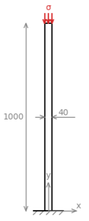
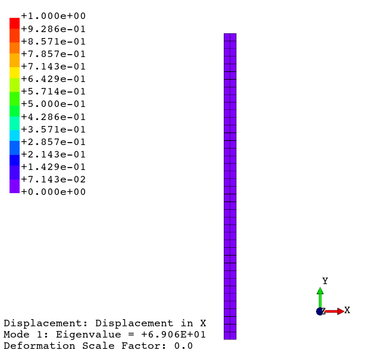

FEAPACK Examples
Basic example #5: Buckling of a slender bar.
Consider the following bar under compression:
The geometry of the bar is defined by a height of 1 m and a square cross-section with a side length of 40 mm. The material (steel) is considered elastic, homogeneous, and isotropic, defined by a Young's modulus of 210 GPa and a Poisson's ratio of 0.3. The bar is fixed on one end, while the other is subjected to a compressive surface load. The objective is to perform a buckling analysis in order to obtain the bar's buckling modes and corresponding critical loads for the considered load pattern. As the buckling analysis returns load multipliers, the applied load has a magnitude σ of 1 MPa. A plane stress condition is assumed.
Consistent units: below, the geometry will be defined in mm, whereas the Young's modulus and load magnitude are defined in MPa. Consequently, displacements are computed in mm.
The FEAPACK files for this example can be found here.
Solution via FEAPACK:
Start by creating a job script named basic5.py and import the following modules:
import feapack.model
import feapack.solver
For this example, a finite element mesh has been prepared in basic5.inp:
The basic5.inp file defines 325 nodes and 80 CPS8 elements. The supported Abaqus element types are automatically converted into the comparable FEAPACK element types (in this case, the CPS8 elements are converted into Plane8 elements). Additionally, Abaqus stores the element connectivity using 1-based indexing, which is automatically converted into 0-based indexing, as required by FEAPACK.
We can then load the mesh onto a new model database (MDB):
# create model database (MDB)
mdb = feapack.model.MDB.fromFile('basic5.inp')
Next, the following sets can be created:
# create node sets
mdb.nodeSet(name='nodes at y = 0', indices=(node.index for node in mdb.mesh.nodes if node.y == 0.0))
mdb.nodeSet(name='nodes at y = 1000', indices=(node.index for node in mdb.mesh.nodes if node.y == 1000.0))
# create element set
mdb.elementSet(name='all elements', indices=range(mdb.mesh.elementCount))
# create surface set
mdb.surfaceSet(name='top surface', surfaceNodes='nodes at y = 1000')
The node set 'nodes at y = 0' contains the base nodes and is used later to apply the boundary condition. The node set 'nodes at y = 1000' contains the top nodes and is used to create the surface set 'top surface', which in turn contains the element surfaces defining the top surface of the bar and is used for the load application. Finally, the element set 'all elements' is used for the section assignments.
The material and section are defined as follows:
# create material and section
mdb.material(name='steel', young=210000.0, poisson=0.3)
mdb.section(
name='steel section',
region='all elements',
material='steel',
type=feapack.model.SectionTypes.PlaneStress, # or simply 'PlaneStress'
reducedIntegration=False
)
We then define the load pattern and the boundary condition:
# create load
mdb.pressure(name='unit pressure', region='top surface', magnitude=1.0)
# create boundary condition
mdb.boundaryCondition(name='fixed base', region='nodes at y = 0', u=0.0, v=0.0)
Finally, we call the solver while specifying the requested number of buckling modes:
# call solver
# k0 specifies the requested number of eigenvalues and corresponding eigenvectors
feapack.solver.solve(mdb, analysis='buckling', k0=10)
To actually perform the finite element analysis, the following command is used: python basic5.py. The file basic5.out will be generated upon a successful run. Then, the viewer application can be launched using the following command: python -m feapack.viewer.
Animated results generated using the viewer application:
Note: buckling shapes are normalized with respect to the infinity norm of the eigenvector.
As a form of validation, consider Euler's critical load formula:
where:
- is the Euler's critical load (force).
 is the Young's modulus of the material.
is the Young's modulus of the material. is the second area moment of the cross section.
is the second area moment of the cross section.- is the length of unsupported material.
 is an effective length factor.
is an effective length factor.
For the current example of a fixed-free bar, the effective length factor has a theoretical value of 2, resulting in a critical load of 110,539.6 N, which, in terms of an applied surface load and considering the current cross-sectional area, corresponds to 69.09 MPa. As seen in the animation above, FEAPACK reports an eigenvalue of 69.06 for the first buckling mode, which is to be understood as a load multiplier. As an applied load of 1 MPa was modelled, the critical load determined by the buckling analysis is 69.06×1 MPa, which is very close to the analytical solution.